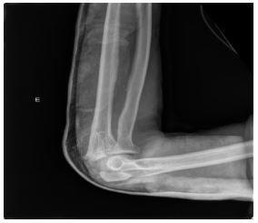
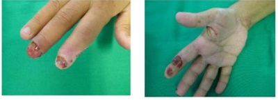
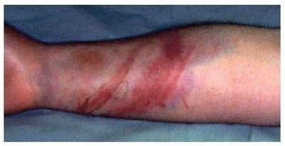
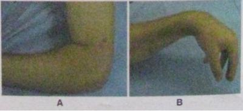

Adolescente, 16 anos, masculino, sem comorbidades, treinou futebol intensamente durante 90 minutos, sem história de traumas ou queixas durante a atividade. Após três horas, relatou o início de dor na região anterolateral da perna esquerda, sem sinais ogísticos associados, e exame neurovascular sem alterações. Foi indicado o uso de analgésicos e gelo local. Como a dor persistia no dia seguinte, ele procurou novamente atendimento médico, quando foi identi cado início de dé cit motor em território do nervo bular comum e parestesia em dorso do pé, que estava edemaciado, com diminuição de sensibilidade e perfusão capilar diminuída. Os pulsos tibial posterior e pedioso estavam palpáveis e diminuídos. Frente ao quadro clínico apresentado indique a hipótese diagnóstica e o tratamento indicado.
Revisar: possível letra faltando em enunciado
Com relação à sindrome compartimental aguda de uma extremidade, independentemente da causa, assinale a alternativa INCORRETA:
Mulher de 42 anos, deu entrada na Unidade de Pronto atendimento após queda de moto. Ao exame físico apresentava-se consciente, com PA= 130x85 mmHg, FC= 98 bpm, FR= 20 irpm; Notou-se no membro superior esquerdo deformidade e edema no braço. Radiograma do membro: fratura umeral esquerda. Após seis horas da reti cação e imobilização, evoluiu com parestesia, dor intensa local e pulso diminuído em comparação ao contralateral. Diante do exposto a conduta a ser adotada é:
O nervo mais comumente lesado nas fraturas do antebraço é o nervo:
As primeiras manifestações decorrentes da síndrome de compartimento de membros, costuma ser: Assinale a alternativa CORRETA.
Durante seu plantão em uma cidade do interior, dá entrada um paciente de 40 anos, canavieiro, relatando luta corporal com uso de facas com seu colega de trabalho há cerca de 1 hora. Refere dor e ferimento inciso em terço superior do antebraço. Ao exame, nota- se dificuldade de movimentação da mão com posição típica de queda do punho. Qual o tipo de lesão mais provável?
Paciente, 25 anos, masculino e sem comorbidades é vítima de acidente automobilístico. No atendimento hospitalar foi identificado fratura do fêmur direito, fratura de 3 e 4° arcos costais à direita e pequena área de contusão pulmonar adjacente às fraturas. Após 24 horas do trauma, evolui com dispneia e agitação psicomotora. Ao exame, apresenta: PA = 80 x 50 mmHg, p110 ppm, SpO2 84% em ar ambiente. Tem petéquias em tórax e conjuntivas. Qual a alternativa correta quanto ao diagnóstico mais provável?
Paciente foi submetido à osteossíntese dos ossos do antebraço direito há 4 meses sob anestesia geral. Retorna com dor em queimação e di culdade para movimentar a mão e dedos desde a retirada do gesso. Ao exame físico: antebraço direito com pele e anexos atróficos e mais frio do que o esquerdo. Qual é o diagnóstico?
Em um paciente submetido à cirurgia por fratura de rádio e ulna, o ortopedista está preocupado com a Síndrome do Compartimento porque a cirurgia foi difícil e demorada. Na UTI, o ortopedista informa que ele deve ser chamado ao primeiro sinal dessa síndrome. A enfermeira deverá chamá-lo se o paciente apresentar
Em relação à síndrome compartimental é correto afirmar que:
Homem, 27a, deu entrada no pronto-socorro após queda da escada. Exame físico: consciente, acianótico, PA= 130 x 85 mmHg; FC = 98 bpm; FR = 20 irpm. Membros: membro inferior direito com deformidade e edema na perna. Radiograma do membro: fratura da tíbia e fíbula direitas. Após seis horas da reti cação e imobilização com tala da perna, evoluiu com parestesia, dor intensa local e pulso pedioso diminuído em comparação ao contralateral. A conduta é:
A lesão do nervo_________e a(o)_________são as complicações mais frequentes numa fratura por alta energia da diá se do úmero em um adulto.
Sobre a síndrome compartimental, assinale a alternativa correta.
Menino, 11 anos, refere desinteresse nas atividades escolares e há 20 dias iniciou com uma dor forte no pé direito. O mesmo ocorreu há 3 anos. Até os 8 anos de idade, praticava futebol. O exame físico era normal, exceto pelo pé direito que apresentava dor aos movimentos passivos e ativos, além de edema +/++++. O hemograma e o estudo radiológico eram normais. A hipótese diagnóstica mais provável é
Paciente, masculino 24 anos, vítima de acidente automobilístico, admitido, com diagnóstico de traumatismo torácico, fratura dos 2 fêmures, e tíbia esquerda. Encaminhado ao hospital, consciente, referindo dor, eupneico, hemodinamicamente estável, Durante o transporte até o hospital apresentou 3 episódios de vômitos. Ficou internado em observação na UTI.com imobilização sob tração dos membros inferiores e sedação para controle da dor. No dia seguinte, 24H após o trauma, começou a car agitado, confuso, intensamente dispneico, hipoxemia - PO2 65mmHG com 100% de O2 em Máscara de Venturi. Observou-se petéquias, no tórax, região axilar e membros inferiores. Qual o diagnóstico mais provável do quadro atual?
Síndrome da Dor Complexa Regional do Tipo 1, é caracterizado se por dor intensa, limitação e alterações autonômicas, com edema, hiperemia e sudorese, em geral acometendo uma das mãos. Ocorre normalmente após lesão nervosa, trauma, cirurgia ou imobilização. A dor tem padrão neuropático, com sensação de queimação, hiperalgesia, alodinia e disestesias. Relaciona-se com as seguintes situações, EXCETO:
O diagnóstico precoce de lesões neurológicas secundárias à fratura-luxação é essencial para a recuperação funcional do membro. Assinale a alternativa que contempla a associação CORRETA.
Uma parede desaba sobre um trabalhador, cando o membro inferior direito soterrado e preso sob os escombros. O resgate levou duas horas, e a perna direita evoluiu com aumento do volume, dor importante e cianose de extremidade. O pulso pedioso direito está diminuído. O tratamento é:
Em relação à contratura de Volkmann, afirma-se: I. Os músculos do antebraço sofrem necrose e são substituídos por fibrose. II. Desenvolve-se como resposta à isquemia prolongada no nível do antebraço. III. O flexor longo do polegar e flexor profundo dos dedos são os músculos mais frequentemente afetados. Está/Estão correta (s) a (s) afirmativa (s):
Um trabalhador de 33 anos foi vítima de queimadura elétrica de alta voltagem. A entrada da corrente elétrica foi na mão esquerda e a saída na panturrilha direita. A saída corresponde a uma área de queimadura de terceiro grau de cerca de 5 cm². Tem dor na perna direita, mas a perfusão é boa e o pulso pedioso é normal à palpação. Não se detectam alterações de sensibilidade nem de motricidade na perna afetada. Após 8 horas, contudo, a dor na perna aumenta muito e o pé ca pálido e frio. O pulso pedioso desaparece. O diagnóstico e a conduta, neste momento, são respectivamente:
Revisar: possível letra faltando em enunciado
O principal mecanismo fisiopatológico da embolia gordurosa é:
Após acidente automobilístico, paciente ca com membro inferior esquerdo preso nas ferragens por cerca de 4 horas. Após resgate, o membro apresentava-se com grande edema, empachamento, cianose de extremidades e muita dor. Os pulsos distais estavam presentes, porém bastante diminuídos. O tratamento adequado para o quadro acima é:
Revisar: possível letra faltando em enunciado
“A síndrome da embolia gordurosa (SEB) é uma entidade relacionada com um subgrupo de SARA (Síndrome da Angústia Respiratória do Adulto). A SARA é um estado de falência pulmonar...” Com relação à SEB, é CORRETO afirmar que:
"A síndrome compartimental ocorre secundariamente a um aumento da pressão no espaço osteofacial fechado." Sobre a síndrome compartimental em membros, é CORRETO afirmar que:
Uma parede desaba sobre um trabalhador, cando o membro inferior direito soterrado e preso sob os escombros. O resgate levou duas horas, e a perna direita evoluiu com aumento do volume, dor importante e cianose de extremidade. O pulso pedioso direito está diminuído. O tratamento é:
No tratamento da síndrome de compartimento em membro isquêmico grave:
A respeito da Síndrome Compartimental de Extremidades, marque a opção que esteja INCORRETA:
Paciente vítima de trauma com esmagamento do membro inferior esquerdo após desabamento de laje, evoluindo com marcante edema da perna, dor intensa e sensação de parestesias, apresentando diminuição do pulso pedioso e palidez distal no membro afetado. Qual é o tratamento a ser empregado no caso acima?
T. T., 34 anos, chega ao Pronto Socorro Municipal de Cuiabá, queixando-se de dor em queimação excruciante em sua mão esquerda. O sintoma iniciou seis meses antes, após imobilização prolongada da mão devido tratamento para tendinite de punho. Os sintomas dolorosos vêm piorando progressivamente desde então.Trouxe a eletroneuromiogra a de membro superior que está normal. Ao exame físico, mão esquerda edemaciada, com vermelhidão excessiva, ausência de sudorese e baixa temperatura em comparação ao membro contralateral. A dor foi refratária aos analgésicos comuns e opioides fracos. Foi iniciada a gabapentina há dois dias, sem resposta clínica até o momento. Qual é o diagnóstico?
Vítima de colisão de carro e poste, um paciente de 58 anos sofreu trauma de crânio leve (Glasgow 14), trauma torácico com fratura de 2 arcos costais à direita, sem hemotórax ou pneumotórax, bem como fratura fechada de braço (radiogra a a seguir, com o braço já imobilizado). Está em observação no pronto-socorro há 2 dias, agora já em Glasgow 15, respirando bem e com bom controle álgico das fraturas de arcos costais. Contudo, refere piora acentuada da dor no braço engessado, apesar de analgesia potente. Também se queixa de intenso formigamento no braço. Não é possível palpar o pulso radial, devido ao gesso. No momento, não tem ortopedista nem cirurgião vascular no hospital, devendo ser solicitada transferência, caso julgue necessário ter a avaliação desses especialistas. Provável diagnóstico e conduta:

Você é chamado para avaliar um paciente do sexo masculino, 27 anos, internado na enfermaria de ortopedia por fratura fechada de fêmur esquerdo há 2 dias, após acidente automobilístico, sendo submetido a tratamento conservador (tração), com planejamento de cirurgia em segundo tempo. Evolui com dispneia de início súbito, confusão mental e petéquias em tórax anterior. Ao exame físico: PA = 130 x 80 mmHg; murmúrio vesicular presente sem ruídos adventícios; frequência respiratória de 36; ritmo cardíaco regular; bulhas normofonéticas; frequência cardíaca de 120 bpm; abdome sem alterações; sonolento; pouco contactuante. Saturação de oxigênio 82% em ar ambiente. Qual o diagnóstico e a conduta imediata?
Um homem de 52 anos de idade, vítima de trauma por esmagamento da perna direita, foi encaminhado para uma Unidade de Atendimento de Emergência queixando-se de dor forte na perna. Radiogra as descartam fratura dos ossos da perna. Ao exame apresenta edema da perna direita, boa perfusão distal e dor intensa a dorsi exão dos dedos do pé. O diagnóstico do paciente e a conduta inicial a ser adotada são, respectivamente:
Um homem de 25 anos de idade e 80Kg de peso corporal envolve-se em um acidente de motocicleta na avenida Ayrton Senna, Barra da Tijuca. Sofre uma fratura dia sária do fêmur e desenvolve in ltrado pulmonar difuso bilateral no dia seguinte. O paciente utilizava capacete e não houve trauma craniano significativo ou perda da consciência. Qual é a causa MAIS PROVÁVEL da condição pulmonar do paciente?
São sinais precoces da síndrome compartimental de extremidades, exceto:
Trauma vascular de artéria poplítea com lesão total com evolução para edema de perna, pé equino e perda da sensibilidade, qual o seu diagnóstico provável?
Vítima de queda de motocicleta, um rapaz de 22 anos teve fratura fechada de rádio, com esmagamento. Inicialmente, o pulso periférico distal à lesão era normal à palpação. Cerca de 3 horas após, o paciente começa a queixar-se de formigamento e dor no braço e na mão e a apresentar edema progressivo do membro. O pulso ca no, claramente assimétrico em relação ao outro membro. Conduta:
Revisar: possível letra faltando em enunciado
Paciente de 30 anos de idade, vítima de acidente automobilístico, com fratura bilateral do fêmur, em tração por dois dias, apresenta piora do nível de consciência, petéquias nas conjuntivas, PaO₂/FiO₂ de 150 e CO₂ arterial de 28 mmHg, sem alteração hemodinâmica. A tomogra a do crânio sem alterações. Qual é a provável causa do rebaixamento de consciência?
Paciente masculino de 25 anos apresenta história clínica de trauma na face volar do punho há 4 meses. Ao exame físico mostra insensibilidade total nas unhas dos dedos indicador e médio, o que facilita o aparecimento de lesões frequentes com dificuldade de cicatrização. Qual é a hipótese diagnóstica? (VER IMAGEM)

Qual o primeiro sintoma da síndrome compartimental e qual o tratamento adequado?
Quais músculos do antebraço são mais gravemente acometidos na síndrome de Volkmann decorrente de uma fratura de antebraço?
Trauma vascular de artéria umeral em criança, qual a principal fratura envolvida?
Um homem de 37 anos de idade bateu seu carro em alta velocidade contra um poste. Ficou preso nas ferragens e decorreram 50 minutos até que fosse retirado do veículo. Trazido pelo resgate em prancha rígida, com colar cervical, recebendo oxigênio, 10 L/minuto, chega ao pronto-socorro depois de mais 40 minutos. Apresenta fratura fechada de tíbia e fíbula à esquerda, que foi cuidadosamente imobilizada. Está orientado e estável hemodinamicamente. Queixa-se de muita dor em perna esquerda, principalmente à movimentação do pé. A perna esquerda tem edema tenso e pulsos distais diminuídos, sendo muito dolorosa à movimentação passiva. Conduta prioritária:
Um homem de 24 anos encostou a mão direita em o de alta voltagem. Foi intubado no local. Na chegada ao pronto- socorro, tem frequência cardíaca de 105 bpm e PA: 115 x 70 mmHg. É iniciada a reposição volêmica. Tem queimadura de terceiro grau no dorso da mão direita (entrada). Não tem lesão de pele nos braços. O braço direito está tenso e tem os pulsos distais muito diminuídos, embora presentes. O tempo de enchimento capilar é maior que 4 segundos. Próximo passo:
Associe as lesões ortopédicas (coluna A) às respectivas lesões arteriais (coluna B), numerando corretamente os parênteses. Coluna A - Lesão ortopédica 1. Fratura supracondiliana de úmero; 2. Fratura clavicular/1ª costela; 3. Deslocamento de ombro; 4. Fratura de fêmur distal; 5. Fratura de tíbia proximal. Coluna B - Lesão de artéria ( ) Artéria axilar; ( ) Artéria braquial; ( ) Artéria femoral/poplítea; ( ) Artéria poplítea/vasos distais; ( ) Artéria subclávia. A numeração correta dos parênteses, de cima para baixo, é:
Homem, 25 anos, chega ao serviço de emergência com história de esmagamento no antebraço. Ao exame clínico, a pele apresenta-se estendida, com desaparecimento das pregas cutâneas, edema importante, vários hematomas e equimoses na face dorsal e volar do antebraço. (VER IMAGEM). Paciente refere aumento significativo da dor quando solicitado a realizar o movimento de flexão e extensão digital. Ao RX, não se evidencia fratura. Qual a hipótese diagnóstica mais provável?

"Uma falha no diagnóstico e no tratamento da síndrome compartimental no paciente politraumatizado resulta em diversos casos de morbidades evitáveis". Sobre a síndrome compartimental em membros é correto afirmar:
Paciente masculino, 50 anos, vítima de queda de nível (2 metros), dá entrada no pronto-socorro com história de trauma direto em braço direito. Ao exame físico apresenta di culdade de extensão do polegar direito e aumento de volume em terço distal de braço direito. Submetido à radiogra a de úmero que evidenciou fratura em espiral entre terço médio e distal de úmero direito. De acordo com o caso acima assinale a principal hipótese diagnóstica e qual o melhor tratamento para o paciente acima.
Paciente teve a perna esmagada sob motocicleta durante 5h, com fraturas da tíbia e fíbula. Inicialmente foi tratado com gesso, evoluindo com dor intensa. Este aparelho foi bivalvado, porém a dor não melhorou. Após 4 meses, o exame físico mostrou deformidade do pé com 45 graus de equino e varo e mínima capacidade de extensão dos dedos e tornozelo. O pé é doloroso à carga. Baseado na história e exame clínico, qual deveria ser o melhor diagnóstico:
Paciente de 24 anos, vítima de fratura de fêmur direito decorrente de acidente motociclístico, foi levado ao pronto-socorro de sua cidade sem os devidos cuidados de socorro pré-hospitalar. Iniciou, súbita e intensa dor torácica associada à dispneia e cianose. O que mais provavelmente aconteceu com este paciente?
Homem de 29 anos, vítima de acidente automobilístico sofreu fratura fechada de diá se de fêmur direito. Internado com tração esquelética há 2 dias, começou a apresentar desconforto respiratório, confusão mental, taquicardia, petéquias e febre. Gasometria revela PO2 de 55 mmHg, P.A . 110 x 70 mmHg. A hipótese diagnóstica provável é:
J.D.G., masculino, 8 anos de idade, teve fratura fechada dos ossos do antebraço direito, sendo realizada redução incruenta e aparelho gessado axilopalmar. Retorna ao PS, após 6h, com dor em todo o membro superior acometido e parestesia na mão. No momento, há boa perfusão e pulso presente. Qual a sua conduta inicial?
Sobre a embolia gordurosa: I- A estabilização precoce das fraturas tem se mostrado eficiente na prevenção da síndrome; II- As manifestações clínicas nas crianças são bem mais raras que nos adultos; III- A taxa de mortalidade gira em torno de 25%. Está (ão) CORRETA (s):
A fratura do joelho com luxação posterior está mais comumente associada à lesão da artéria:
A fratura umeral supracondiliana pode lesar:
O trauma vascular pode causar a chamada síndrome compartimental, que é um aumento das pressões nos compartimentos afetados pelo trauma. Para evitar e tratar a síndrome compartimental, é realizada a fasciotomia. Sobre este procedimento, assinale a afirmativa verdadeira.
Vítima de acidente automobilístico, 30 anos, politraumatizada, com fratura em ossos da pelve e fêmur direito. Após 8 horas da admissão na emergência, iniciou quadro de dispneia súbita, insu ciência respiratória, alteração no nível de consciência e petéquias. Qual o diagnóstico mais provável?
Existem três regiões das extremidades que são mais comumente comprometidas pela síndrome compartimental, que são:
A síndrome da embolia gordurosa (SEB) é uma condição caracterizada por angústia respiratória, alteração do estado mental e petéquias na pele. É correto afirmar a respeito da síndrome da embolia gordurosa:
O reconhecimento e o tratamento precoce da síndrome compartimental é crítico no paciente traumatizado para evitar a morte, amputação precoce e disfunção de membro. Com relação à síndrome compartimental é correto afirmar:
Paciente, vítima de acidente de trânsito há 24 horas, com fratura bilateral de fêmur e trauma contuso em tórax, com fratura de dois arcos. Ao exame físico, apresenta confusão mental, frequência cardíaca 130 bpm, frequência respiratória 42 irpm, petéquias nas axilas. À ausculta pulmonar: murmúrio vesicular presente e simétrico, com estertores crepitantes bilaterais. Raio X de tórax: infiltrado pulmonar difuso. Considerando o quadro acima, qual o diagnóstico mais provável?
Homem previamente hígido chegou à emergência com ferimento por arma de fogo na região lateral do braço, próxima ao cotovelo esquerdo (VER IMAGEM A). Não conseguia realizar extensão ativa de punho e dedos do mesmo lado (VER IMAGEM B). O radiograma da região não mostrou alteração óssea. A principal suspeita é:

Qual o nervo que pode ser lesado na fratura diafisária distal do úmero?
Selma, 38 anos, vítima de acidente automobilístico, sofreu fratura de fêmur, sendo removida para hospital de emergência sem os devidos cuidados. Apresentou, ao chegar ao hospital, intensa e súbita dor torácica associada a cianose e dispneia. A hipótese diagnóstica mais provável é:
Paciente portador de fratura da diá se do úmero, com incapacidade de extensão do punho e das articulações metacarpofalangeanas apresenta:
Qual das afirmações abaixo é verdadeira?
Um homem de 27 anos sofre um ferimento por arma de fogo na coxa direita. No pronto-socorro, é notado um grande hematoma na região medial de sua coxa esquerda. Ele se queixa de parestesia em seu pé esquerdo. Ao exame há pulso palpável fraco distalmente à lesão e ele é incapaz de mover seu pé esquerdo. O tratamento inicial mais adequado para esse caso seria:
Uma paciente vítima de politrauma secundário a um acidente automobilístico, foi atendida em um hospital terciário de trauma, estabilizada e tratada. No 4º dia pós - trauma, ela apresentou dispneia progressiva, queda de níveis de consciência e petéquias conjuntivais. Qual das seguintes lesões traumáticas mais provavelmente foi a causadora do quadro clínico apresentado?
A Síndrome compartimental em MID após reperfusão sanguínea na oclusão arterial aguda de ser primeiramente tratado com:
Uma mulher de 40 anos chega à emergência do HUWC, depois de uma queda enquanto saía do ônibus, sentindo forte dor no braço direito. O exame físico sugere fratura do úmero, confirmada após exame radiológico. Ela consegue estender o antebraço no cotovelo, mas seu movimento de supinação parece enfraquecido e seu aperto de mão é muito fraco comparado ao da mão esquerda. Percebe-se que ela está incapaz de estender o punho, permanecendo a mão caída. A paciente apresenta enfraquecimento considerável na supinação quando a articulação do cotovelo está completamente estendida, no entanto, pequeno enfraquecimento evidente no movimento de supinação quando o cotovelo é etido parcialmente. Qual a opção que dá o motivo desta observação?
No tratamento de síndrome de compartimento em membro isquêmico grave:
Paciente politraumatizado deu entrada no pronto socorro com lesão neurológica grave, hipotenso e em coma, necessitou ser intubado durante o atendimento inicial pela gravidade do seu quadro clínico. Na sala de trauma o ortopedista observou grande edema da perna direita com sinais de esmagamento e extensa lesão de partes moles com uma fratura fechada cominutiva do 1/3 proximal da tíbia (Tscherne III). Com relação ao diagnóstico de síndrome compartimental a conduta correta é:
Acerca da avaliação e do tratamento de pacientes politraumatizados, julgue o item subsequente. Os sinais mais precoces de sindrome compartimental são o déficit motor e o desaparecimento do pulso distal.
Uma mulher de 40 anos chega à emergência do HUWC depois de uma queda enquanto saía do ônibus sentindo forte dor no braço direito. O exame físico sugere fratura do úmero, confirmada após exame radiológico. Ela consegue estender o antebraço no cotovelo, mas seu movimento de supinação parece enfraquecido e seu aperto de mão é muito fraco comparado ao da mão esquerda. Percebe-se que ela está incapaz de estender o punho, permanecendo a mão caída.Sabendo que a extensão no cotovelo parece normal, mas que a supinação do antebraço está enfraquecida, qual a opção que indica o local do nervo lesionado?
Uma mulher de 40 anos chega à emergência do HUWC depois de uma queda enquanto saía do ônibus sentindo forte dor no braço direito. O exame físico sugere fratura do úmero, confirmada após exame radiológico. Ela consegue estender o antebraço no cotovelo, mas seu movimento de supinação parece enfraquecido e seu aperto de mão é muito fraco comparado ao da mão esquerda. Percebe-se que ela está incapaz de estender o punho, permanecendo a mão caída. Na paciente, fez-se exame de função muscular nas articulações interfalangea distal (ID), interfalangea proximal (IP) e metacarpofalangea (MF). Qual das opções abaixo apresenta os achados esperados na presença de paralisia do nervo radial?
Um homem de 25 anos sofre um ferimento por arma de fogo na coxa esquerda. Chega do hospital queixando-se de dor no membro e parestesia no pé esquerdo. Ao exame físico, é constatado um hematoma grande na coxa esquerda, pulso fraco distal à lesão e ausente na perna distal e no pé. Além disso, o paciente não consegue mexer o pé esquerdo. Qual a conduta adequada?
Com relação à síndrome compartimental, assinale a alternativa incorreta.
A respeito da síndrome compartimental dos MM.II (membros inferiores), é INCORRETO afirmar que:
Paciente de 23 anos, com práticas esportivas regulares, com fratura de fêmur há 2 dias, apresentando dispneia intensa e confusão mental, o diagnóstico mais provável:
Dos exemplos abaixo quais você solicitaria no caso de uma pessoa idosa apresentasse dispneia súbita pós-correção cirúrgica ortopédica:
Sobre a síndrome do compartimento de membros inferiores, assinale a afirmativa INCORRETA:
Paciente com fratura de ossos da perna e síndrome compartimental apresenta:
O aumento de pressão, relacionado a traumatismos graves, em músculos compartimentalizados (antebraço, perna, pé etc..) é conhecido como Síndrome Compartimental. Com relação a esta grave complicação é CORRETO afirmar que:
A embolia gordurosa, decorrente de múltiplas fraturas de ossos longos, pode ser evitada de maneira mais efetiva se:
Lesões ósseas com fraturas podem estar relacionadas com lesões vasculares. Assinale o item onde a lesão vascular acontece com maior frequência:
Assinale a afirmativa correta em relação à síndrome do compartimento: Respostas: 1 12 23 34 45 56 67 78